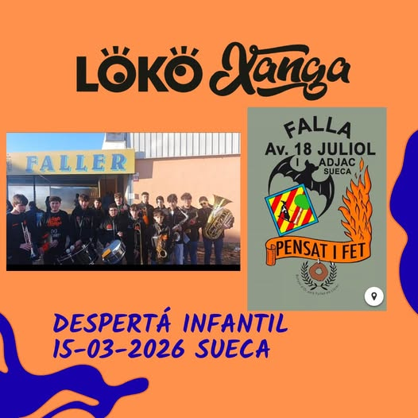
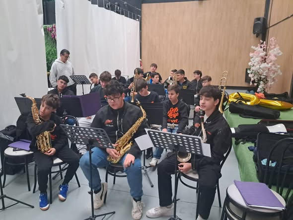
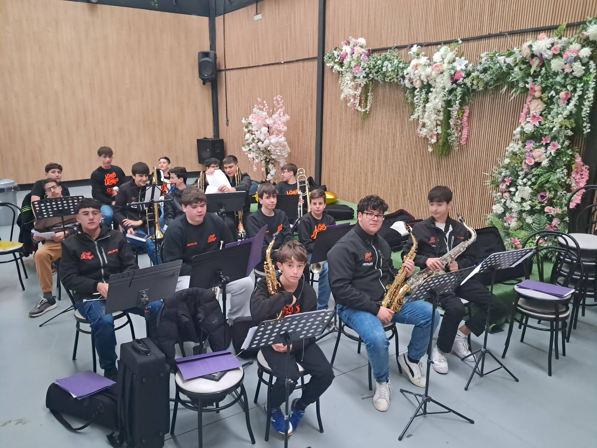
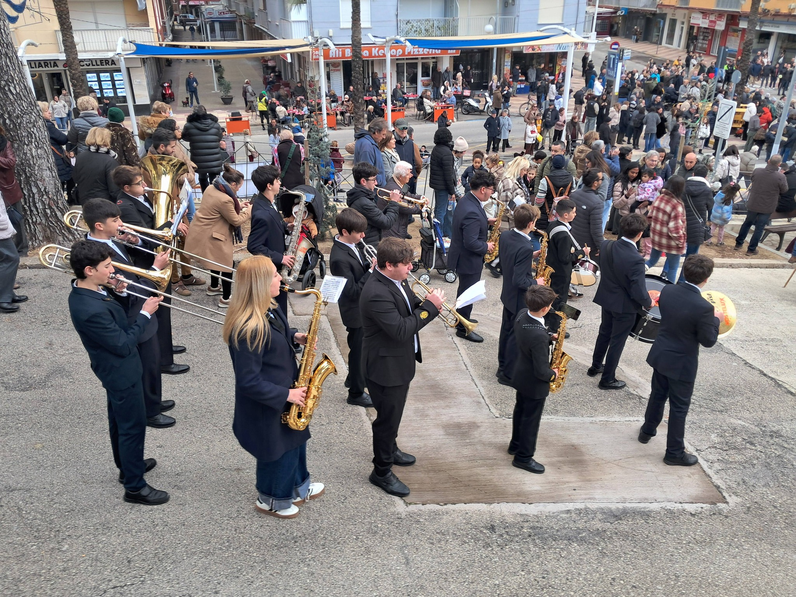
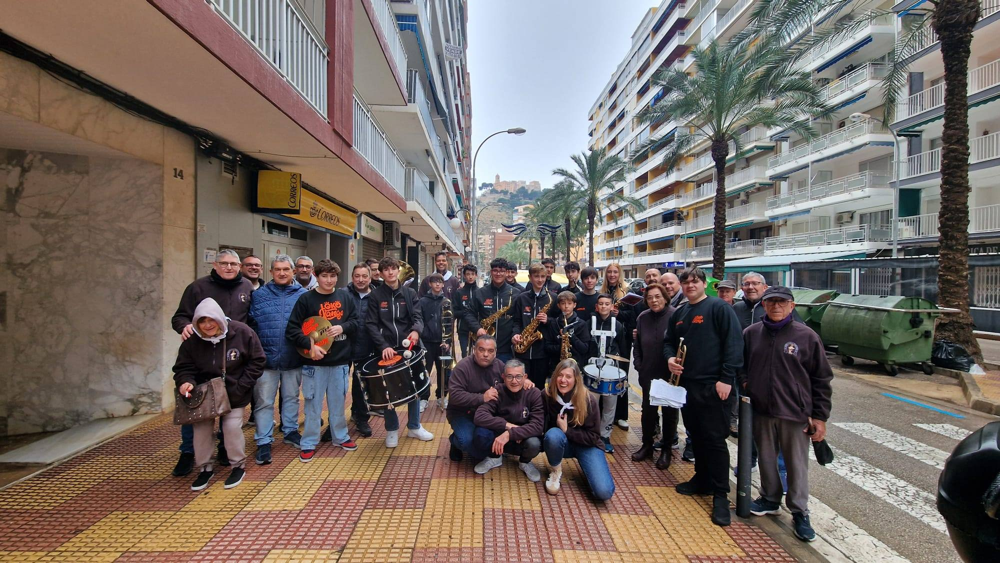
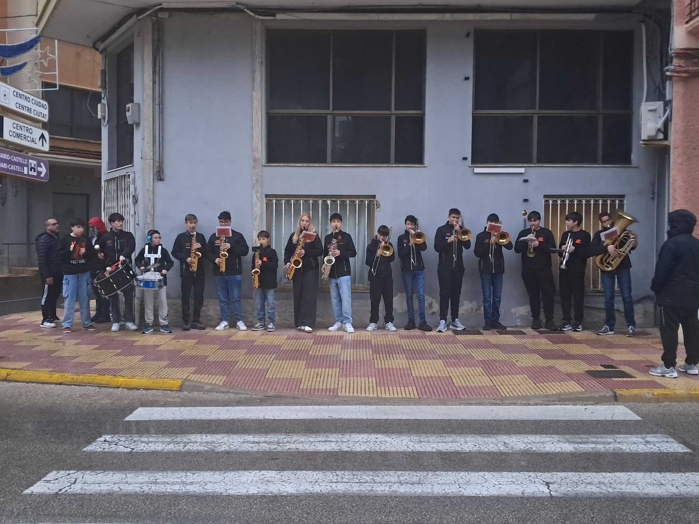

Asociación Juvenil de Charanga en Cullera
La charanga que convierte cualquier evento en un fiestón inolvidable.
Lokoxanga es una asociación musical formada por 18 jóvenes músicos junto a sus familias, sumando una comunidad de más de 54 miembros.
Nace con el objetivo de ofrecer a los músicos una vertiente más lúdica dentro de su formación, complementando el esfuerzo que realizan en conservatorios y bandas de música. El proyecto busca que disfruten de la música desde un enfoque más dinámico, social y cercano.
Con el paso del tiempo, la agrupación ha ido evolucionando hasta consolidarse en 2026, contando ya algunos de sus integrantes con más de tres años de formación dentro de la charanga.
Además, la charanga ha llevado su música a otras localidades como Favara, Sueca, Fortaleny y Polinyà, ampliando su experiencia y presencia.
Estas experiencias permiten a los músicos desarrollarse en entornos reales, ganando confianza y experiencia en la calle.
Lokoxanga cuenta con unas instalaciones únicas en Cullera, con una sala completamente acondicionada para ensayos.
El proyecto está dirigido por un director musical y respaldado por un equipo humano muy implicado, formado por padres y familiares.
La asociación dispone de un equipo de gobierno compuesto por presidente, secretario, administrador y varios vocales comprometidos con el crecimiento del grupo.
Más allá de la música, Lokoxanga busca crear un entorno donde los jóvenes puedan crecer tanto musical como personalmente, fomentando el compañerismo, la convivencia y la pasión por la música.
Animamos las calles con nuestra música.
La mejor energía en directo.
Colaboraciones y shows únicos.






🎉 ¡Haz que tu evento sea inolvidable!
Contacta con nosotros si quieres darles una experiencia a los socios que tocan en la asociación juvenil de charanga, ya sea cumpleaños, fiesta, despedida o cualquier celebración.
Email: lokoxanga@gmail.com
Facebook: @lokoxanga
Instagram: @lokoxanga